PF Photo ECN2 negatives development
Read all the instructions carefully, and ensure that someone from the board is available to assist you if necessary. Always wear gloves, and ensure that all liquids are at the correct temperature (41°C).
This guide refers to June 2025, when I borrowed my first ever analog camera from a DTU club, PF Photo. The camera type was a very sturdy Pentax Spotmatic F. Along with the camera, I bought a Kodak 250D cinematic film and took (the impressive number of) 31 pictures with it. I decided to "dedicate" the whole film to a friend's visit to Copenhagen.
Being it was my first time, I needed support from the club's board. Johan was there (as always) and spent two hours (impressively patiently) explaining the entire process to me on July 3rd. On that day, I took the pictures that follow. The next day, after very little sleep (!), I wrote the following text to recap the whole process, as a reminder.
Remember, the beauty lies in the process and the time it takes to achieve the final result.
Preparing the Film
The first step is to go into the room on the left, where you will find the tools needed to load the film into the canister.
It's better to practice loading the film with the light on and using a sample, since the procedure must be done in complete darkness. It's not like being in your room at night, it's pitch black and you won't be able to see absolutely anything: you will only be able to use your sense of touch.
Once you have switched off the lights, locked the door and put any light-emitting devices in a drawer, you need to open the film container with a kind of bottle opener. Then, pull the film out with your hands and insert it into the small openings on the side of the yellow film loader roll. Repeat the following movement to make the film slide in: hold with one thumb and turn one side of the roll towards you with the other hand, then switch and repeat.
Finally, touch and feel the side of the roll to ensure that all the layers of the film have been loaded. You will know you have reached the end when the film no longer moves outside the original roll. Remove the tape to separate the two so that the original roll can be reused.
Place the film loader roll into the canister. Once all the rolls have been loaded, you can close the canister. After doing this, you can turn on the light and move to the developing room. Luckily, no other parts of the process will require darkness.
Pre-Treatment and Rem-Jet Removal
Fill the canister bathtub with water, then turn it on with the recommended settings so it can start heating up the water. It has to reach 41°C, and this will be the temperature used throughout the whole process. Once it has reached this temperature, insert the canister horizontally until it clicks and turn on the motor so it can rotate. This will save us from having to mix it by hand.
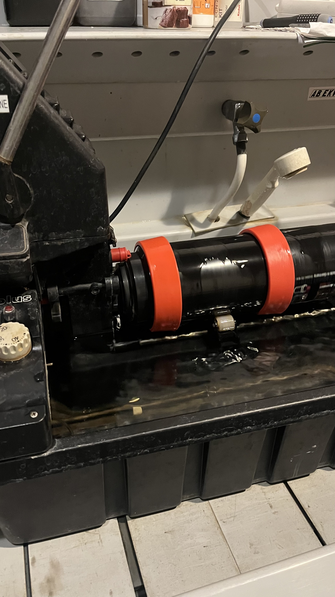If chemicals are not mixed already, refer to the guide which states the proportions between water and the concentrated ingredients. Note that the bottles are 1L, so a ratio should be applied. Most of the time this step is not necessary, as they should already be mixed by the board.
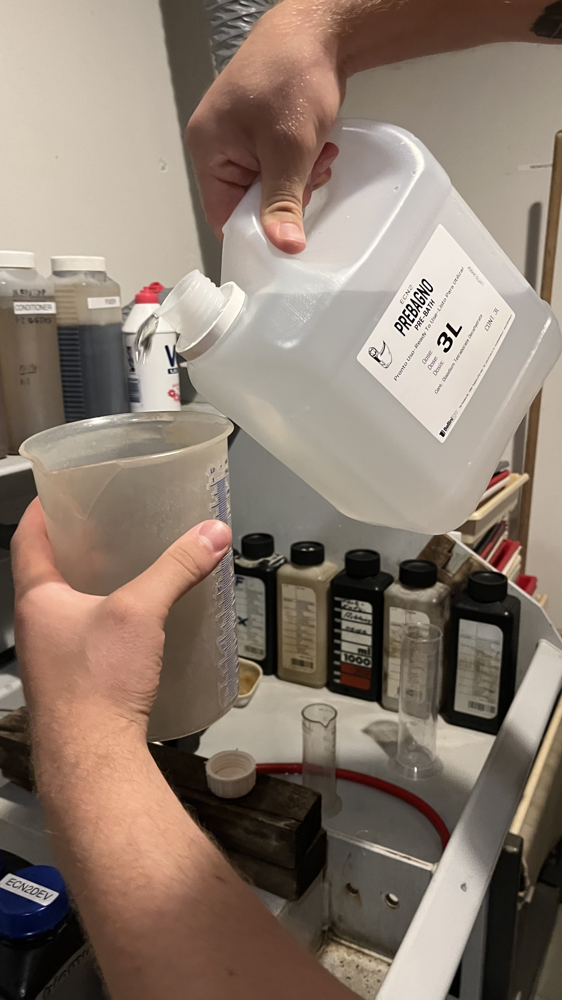 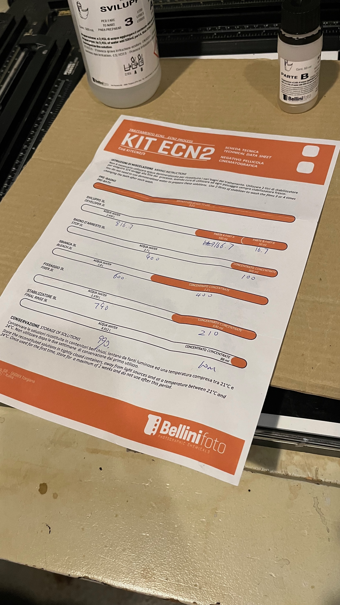Referring to the guide hanging on the wall, start with the washing. Fill a beaker with the amount of water stated on the canister, which depends on the number of films loaded in it. In our case it was 570ml. Ensure, with a thermometer or the knob mark (which may be broken), that the water you use throughout the process is at the correct, consistent temperature.
Pour the water into the opening at the top while keeping the pipe up, to avoid water flowing out. After 30 seconds, pull the lever to raise the canister (hold it with the other hand) and drain the water into the sink below.
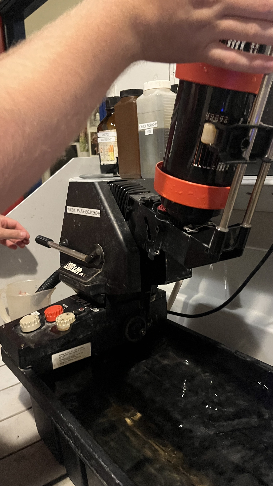Following the steps in the guide, you need to apply the pre-treatment. This step is intended for cinematic film only, in order to detach the rem-jet backing from the film. Place the bottle with the correct label in the bath and insert a new (analog) thermometer in it to ensure the chemical is at the same temperature as the water.
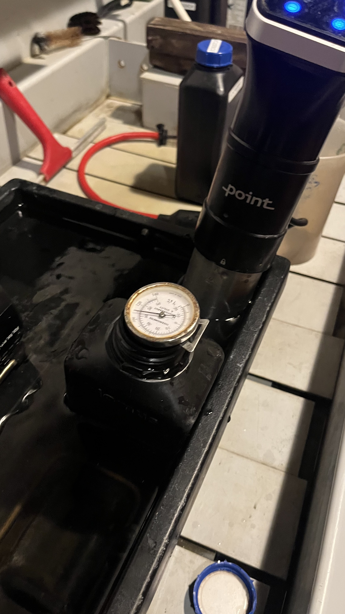Once the correct temperature is reached (this must be done for every chemical!), you can measure the correct amount (just like with the water) in a beaker, then pour it into the machine and let it rotate for the time indicated on the guide, which will be a couple of minutes.
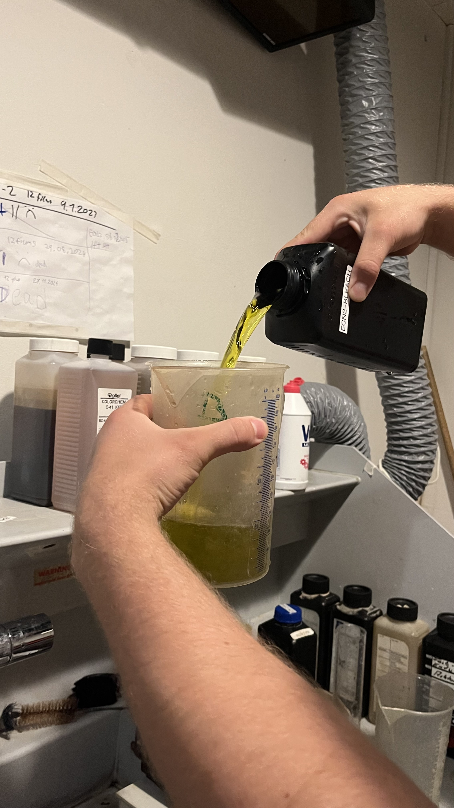After this time, place an empty beaker under the bathtub pipe, pull the lever and drain it as done before with the water. The only very important difference in this case is that you need to save the chemical, as it can and must be re-used by pouring it back into the original bottle.
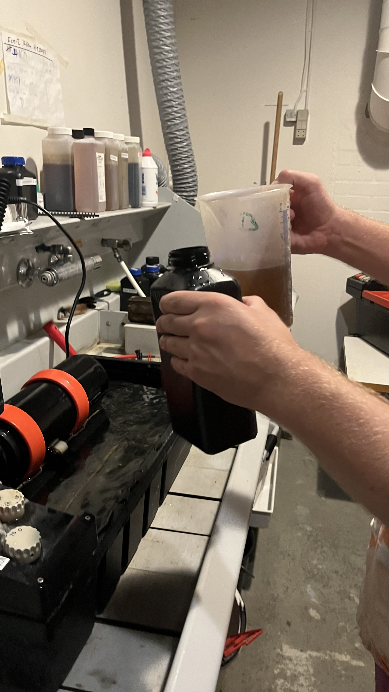Now the guide requires you to wash all the rem-jet residues remaining through multiple washes with water. Measure the quantity of water in a beaker, pull up the pipe, pour it into the canister. Let it rotate for 30 seconds. Pull the lever, holding the canister with one hand. Check the water colour and repeat until it’s clear (around 10 times).
Chemical Development and Washing
Then continue (or start, in the case of a normal film) repeating the same process with the various chemicals, which should be the developer and the fixer, with some washes in between. The only different process is the final chemical (finaliser?). At this point, the film can and has to be pulled out of the canister, as it will no longer be sensitive to light.
With two people, stretch the film between you. You need to get rid of the rem-jet residues by sliding a soaked wet tissue all the way along the shiny (important) side of the film. This is the only side you can touch. Repeat the step two or three times until the tissue is no longer stained with something black.
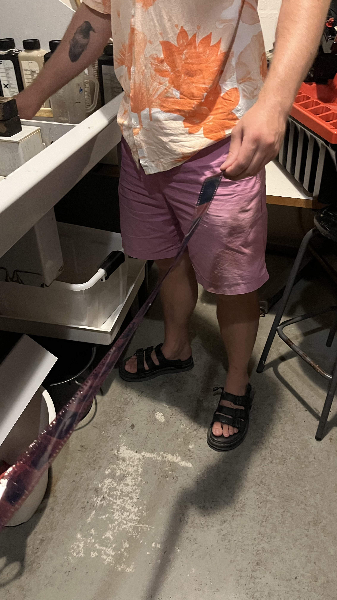Next, fill a beaker on the ground (?) with the final product. This step definitely requires gloves (unlike the video, lol). Then, thoroughly soak the film in the chemical.
Finally, using a cool peg-shaped red tool, you need to dry the film.
Once done, put two clips on the sides of the film and hang it in one of the free spots for the memories in the memories drying closet. Don’t forget, you dumbass, to turn on the machine using the correct knob.
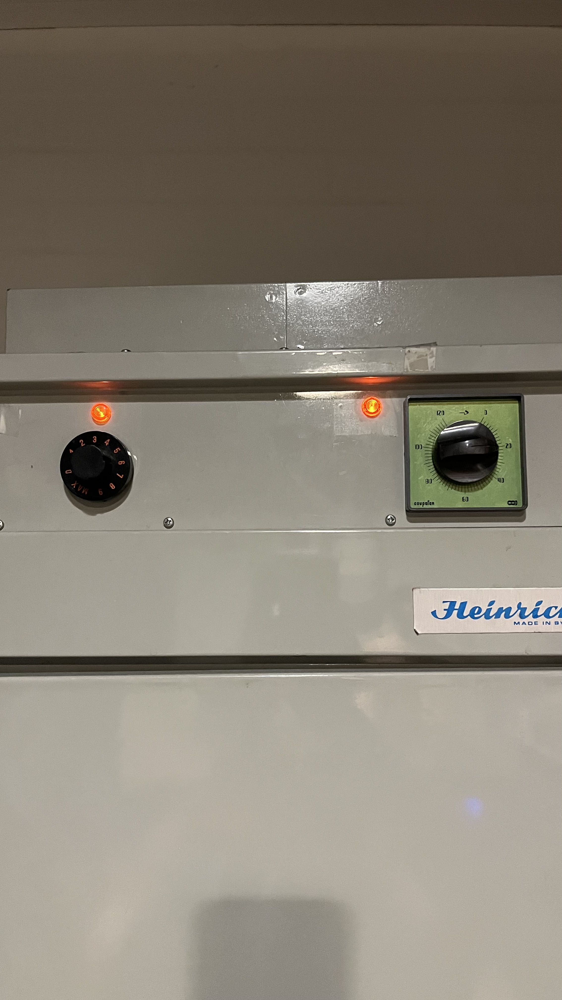Final Drying and Scanning
Once completely dry, your film is fully developed. Now you can either scan it or enlarge it.
The scanning requires using a very interesting and yellow-tinted machine that can digitalize the film via computer with a very interesting software.
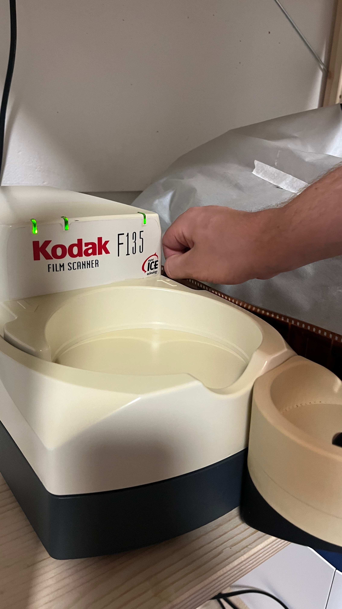Conclusion
That’s it. ECN2 is a bit more demanding than C41 but offers superior color fidelity and highlight retention. Just keep chemicals fresh, maintain temperature, and remove the rem-jet backing properly and you’ll get great results.
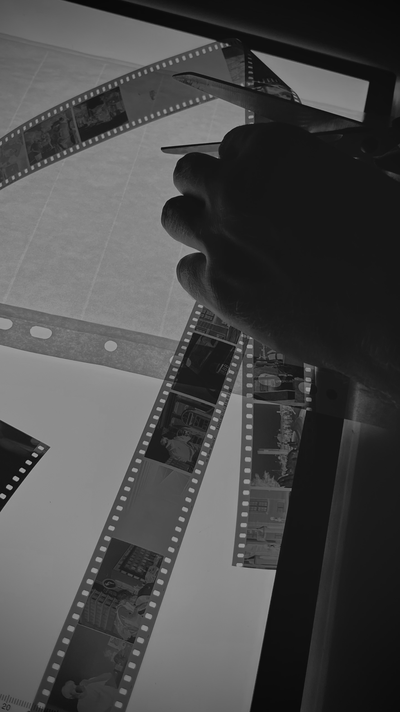